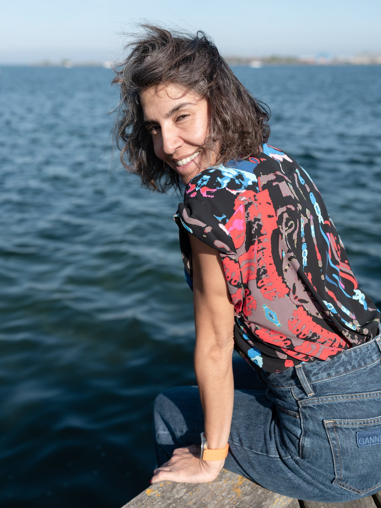
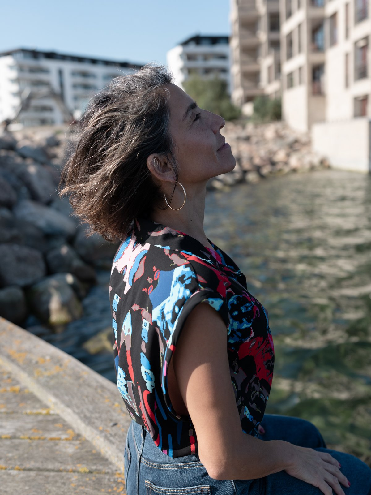
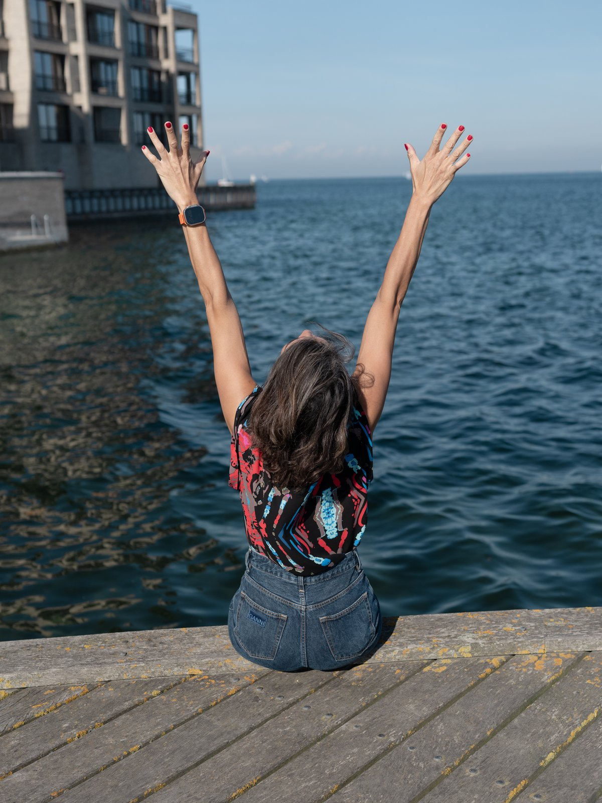

Dos procesos diseñados para acompañarte según el momento en el que estás: uno más enfocado, otro más profundo.

Cada uno diseñado para un momento y un objetivo concreto. Tú eliges desde dónde empezar.

Para trabajar un tema concreto con claridad, estructura y acompañamiento cercano.
Conocer Foco →
Para recorrer un proceso más profundo e integrar el método completo.
Conocer Intensivo →Ambos caminos comparten la misma base. La diferencia está en la profundidad, el ritmo y el momento en el que estás.
ALMAVIVA traduce principios de neurociencia a prácticas de bienestar, autoconocimiento y regulación emocional. Es educación aplicada y acompañamiento, no tratamiento clínico ni sustituto de procesos terapéuticos, psicológicos o médicos.
¿Por dónde empezamos?
Una conversación inicial de unos minutos es suficiente para encontrar el camino.
Agendar conversación inicial →